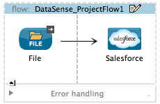
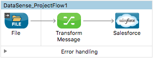
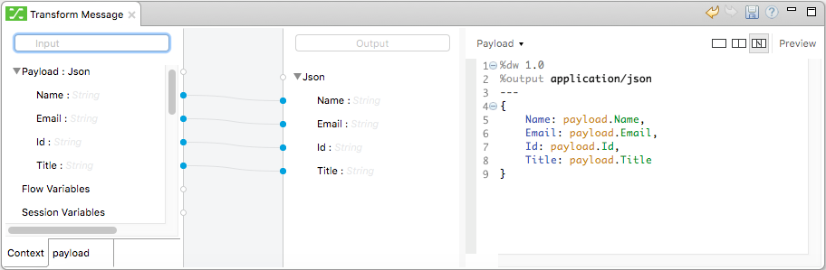
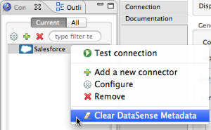
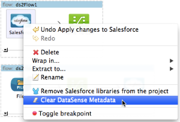

Using Perceptive Flow Design
Building upon the certainty that connection testing establishes, Mule takes one more step to make designing your application easier with Perceptive Flow Design. If you model a flow to include an Anypoint Connector, preceded or followed by a Transform Message component, Mule uses the working connection to the resource to retrieve metadata about message payload and properties. Capturing the data type and structure that a resource employs, Mule feeds that data into the Transform Message component thereby informing the component of the expected input or output. This functionality facilitates mapping of data from one data format and structure to another.
Prerequisites
This document assumes that you are familiar with the Visual Editor in Anypoint Studio and the Anypoint Connectors and DataWeave that you can use to create applications in Studio. Further, this document references Connectors and Global Elements. Review DataSense to learn more about the overall DataSense functionality.
Designing with Metadata
It is very common to need to connect to a SaaS provider within a Mule application. However, because each SaaS provider supports different data types and structures, it is challenging to map data to or from them. Connecting with Salesforce, for example, involves more than just a simple plug and play connection– you must examine the data structure of Salesforce to determine the expected data input or output. If Salesforce employed the same data structure as the raw messages in your application, you could simply map "username" to "username", but that is rarely the case, so usually direct mapping is impossible. For example, you may need to disassemble the "username" input field to map it to a "company_name" output field.
To make mapping data easier, DataSense’s perceptive functionality performs the following activities:
-
Tests connections to the SaaS providers to which you wish to connect
-
Retrieves metadata from the SaaS providers to acquire information about the data structure and format each employs
-
Supplies the sObject type for the data input or output for use by the Transform Message Component
In other words, Mule intelligently examines the structure of the input or output data you intend to map, then feeds the correct input or output values into your Transform Message Component. Using Perceptive Flow Design, you don’t need to figure out the data structures manually. Mule’s automated connection testing and metadata retrieval gives you a higher level of certainty that your flow will run without errors.
Limitations
-
Perceptive Flow Design is only available in Studio’s Visual Editor.
-
To use Perceptive Flow Design, you must configure at least one Anypoint connector, test its connections, then insert a Transform Message component into your flow before or after the connector.
-
Perceptive Flow Design only functions with Anypoint connectors which support connection testing. See the list.
Building a Perceptive Flow
-
Begin by building a flow which contains at least one connector which supports connection testing. For example, create a flow with a Salesforce Connector.
 -
Configure the Salesforce connector, and its corresponding global connector, then test the connection to confirm communication. Refer to Testing Connections for details.
-
Once you have confirmed successful connection to Salesforce, insert a Transform Message Component before the connector on your canvas.
 -
Open the Transform Message Properties Editor.
-
Having already retrieved details about data structure and format from Salesforce (because you have successfully connected via your global connector), Mule already presents the known structure that the Output must have.
-
Manually define the Input structure by clicking the Define Metadata link in the input section.
-
A window opens where you can supply an example or a shema to represent the input structure.
-
You will now see the input fields you manually defined at left, and the output fields that DataSense retrieved from Salesforce at right.
-
Drag and drop input fields across to the output fields to map and transform data format to Salesforce-friendly values. Note how the DataWeave Code on the right is written automatically to match every field you drag along.
 -
Save, then continue to build your Mule application.
Clearing DataSense Metadata
In some cases, you may need to clear the metadata gathered by DataSense – for example if the name of an attribute on the remote application has changed. You can clear the metadata for any DataSense-enabled connector that you have placed on the Studio canvas.
There are two ways to clear metadata:
-
In the Connection Explorer pane, right-click the connector name, then select Clear DataSense Metadata.
 -
In the Studio canvas, right-click the connector, then select Clear DataSense Metadata.
The Clear DataSense Metadata option does not appear, or appears grayed-out, unless DataSense has already gathered metadata for the selected connector.
Clicking Clear DataSense Metadata causes Studio to automatically clear the metadata. This operation preserves the connector’s configuration, including any parameters such as operations, queries, etc. When you reconfigure your connector, DataSense again gathers metadata from the remote application.
See Also
-
Learn more about DataWeave